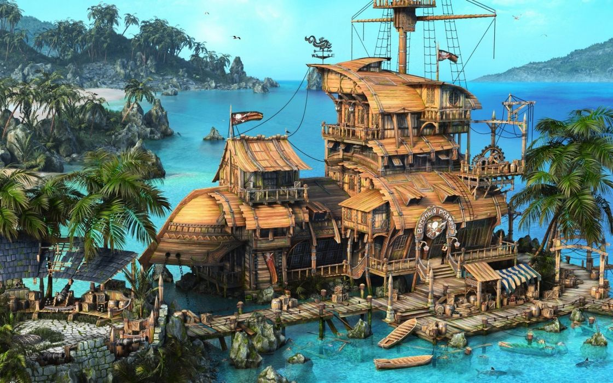

Project Summary
A simple night time rendered scene of a pirate haven.
- Development Time: 3 Days.
- Video lenght: 45 seconds.
- Game Engine: Unreal Engine.
- Modeling software: Autodesk Maya.
Pirate Haven Video
Mind the volume
The idea
My original idea for my night scene was a generic cabin in the woods with a small lake in front of it. After working on the scene for 2 weeks and completing it i realized i was not happy at all with how it turned out. It looked pretty dull and uninspired. I had only 3 days until the deadline at that point and decided to redo the whole scene. I created this "pirate haven" scene on the get go using only the following image as an inspiration.
Challenges
One of the most challenging part of this night time scene was to make lighting perfect. I wanted it to look like it was night time without being pitch black. Even though the tourches helped to illuminate the scene, they were not the most vital part. By working with the athmosphere settings, I wanted to simulate a moon light like vibe to the whole atmosphere, which helped me create an enlightened scene during the night.
Issues and possible improvements
Problem with dynimic lighing during rendering. Not so happy with the horizon. It is rendered in a one shot. Should be multiple angles and shots.